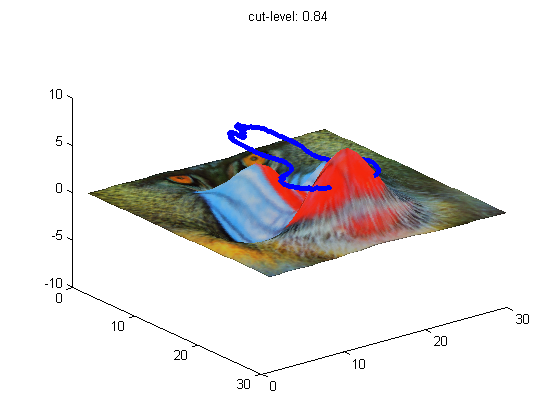
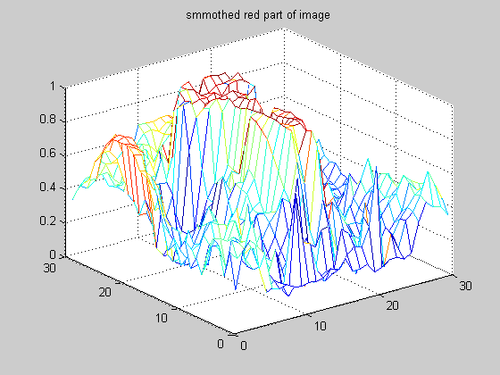
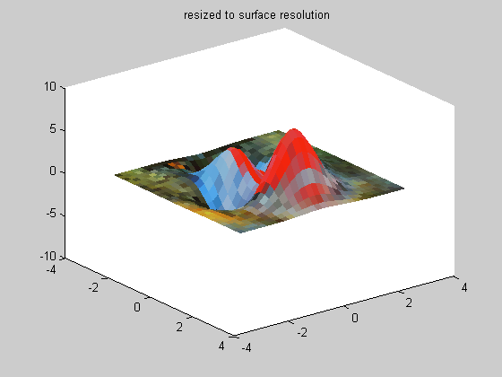
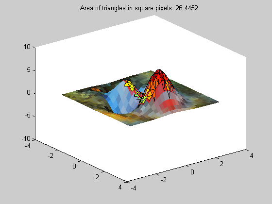

The surface is heated up by radiation. Image analysis should be used to compute the area above a certain temperature level. Here the mandrill serves instead of an IR-image
disp('This demo is meant to run in cell mode.') return;
This demo is meant to run in cell mode.
load mandrill im=ind2rgb(X,map); sz=size(im); ix=sz(1); iy=sz(2); % filter the image h=fspecial('average',5); filtim=imfilter(im,h); % create reference surface [x,y,z]=peaks(30); sz=size(z); sx=sz(1); sy=sz(2); % scaling xfkt=sx/ix; yfkt=sy/iy; % plot image on surface warp(z,filtim) hold on; % compute isoline for red level % and plot 1st isoline only rlevel=0.84 [c,h]=contour(filtim(:,:,1),[rlevel]); idx=2:c(2,1); plot3(c(1,idx)*xfkt,c(2,idx)*yfkt,idx*0+5,'b.') axis([0 sx 0 sy -10 10]) title(['cut-level: ' num2str(rlevel)])
rlevel =
0.8400
 delaunay the surface, resize the image to the surface's points; make sure there are enough triangles covering the the color area of interest
tri = delaunay(x,y);
ptsim=imresize(filtim,[sx sy]);
rptsim=ptsim(:,:,1);
figure
mesh(rptsim)
title('smmothed red part of image')
 figure warp(x,y,z,ptsim) title('resized to surface resolution') hold on
rptsim=rptsim(:); rlevel=0.84; ridx=find(rptsim>rlevel); rtrue=zeros(sx*sy,1); rtrue(ridx)=1; count=rtrue(tri(:,1)); count=count+rtrue(tri(:,2)); count=count+rtrue(tri(:,3)); % try also 1 or 3 red corners: its fun to see idx=find(count>=2); rtri=tri(idx,:); % and display them on top of the image trisurf(rtri,x,y,z) % compute the area of the triangles under % consideration, formula taken from a % textbook: Area=1/2*c*hc, hc=b*sin(alpha). ntri=length(rtri); triarea=0; for k=1:ntri, xt=x(rtri(k,:)); yt=y(rtri(k,:)); zt=z(rtri(k,:)); A=[xt(1) yt(1) zt(1)]; % corner vectors of triangle B=[xt(2) yt(2) zt(2)]; C=[xt(3) yt(3) zt(3)]; va=B-C; % side vectors of triangle vb=A-C; vc=A-B; a=sqrt(va*va'); % side lengths of triangle b=sqrt(vb*vb'); c=sqrt(vc*vc'); if abs(a*b*c)<1e-8 % avoid 1/0 triarea(k)=0; else % compute area per triangle hh=(vb*vc')^2/((vb*vb')*(vc*vc')); triarea(k) = 0.5*c*b*sqrt(1-hh); end end title(['Area of triangles in square pixels: ' num2str(sum(triarea))])